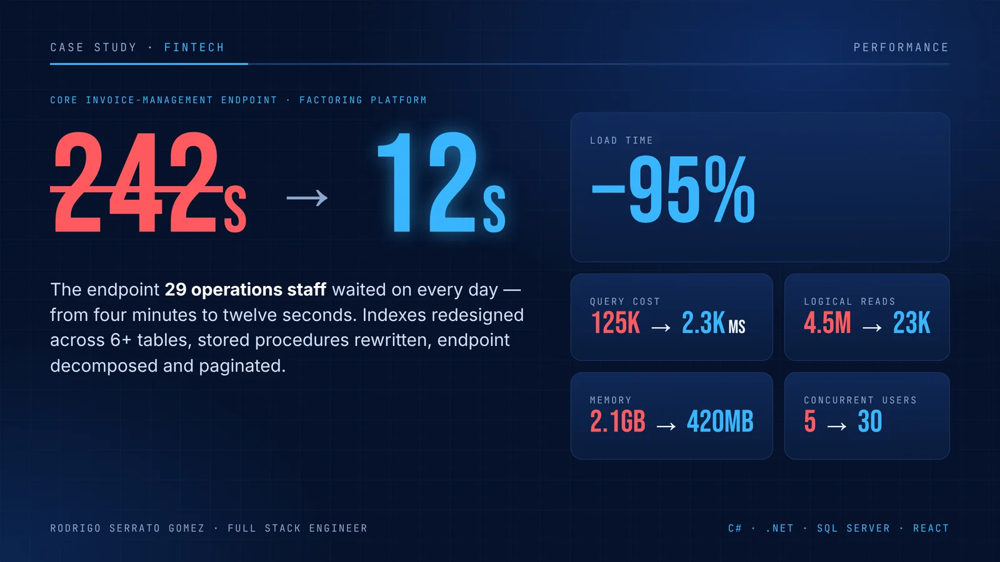
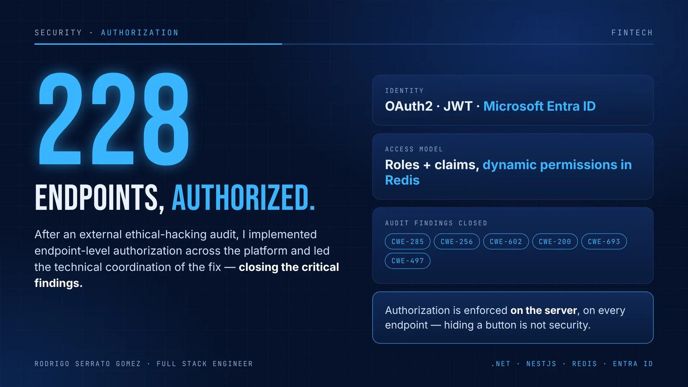
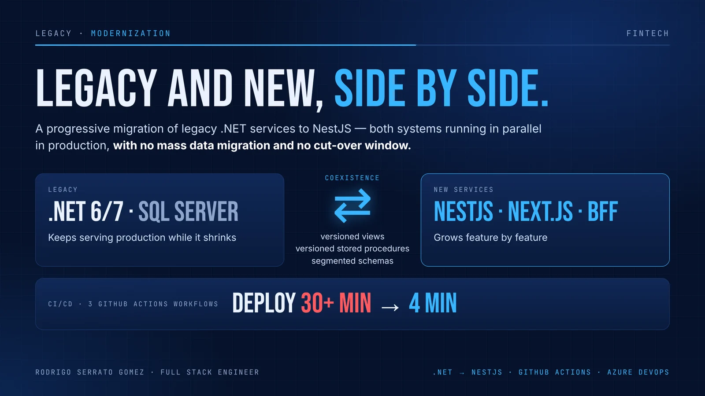
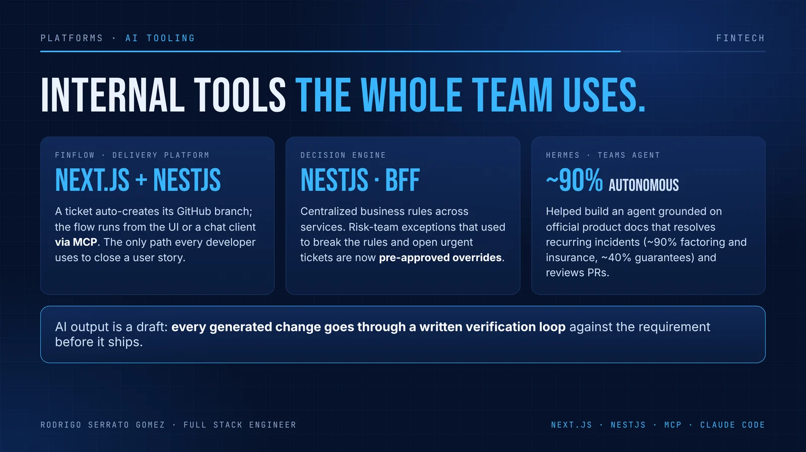

Rodrigo Serrato Gomez
Four years building financial systems. I take on the slow, the legacy and the critical — TypeScript (Next.js, NestJS), legacy .NET and SQL Server modernization, performance and endpoint-level security.
What I can do for your team
Performance
Slow endpoints and queries: execution plans, indexes, stored procedures and pagination — measured before and after.
Modernization
Legacy .NET to TypeScript, feature by feature, with both systems running in production and no big-bang cut-over.
Security
Endpoint-level authorization with roles and claims, OAuth2/JWT with Entra ID, and fixes for audit findings.
Product
Web apps, REST APIs and internal platforms with Next.js, React and NestJS — including AI tooling and MCP.
Four minutes. Every load.
The core invoice-management endpoint of a factoring platform, used every day by 29 operations staff. I took it on as a junior developer and brought it from four minutes to twelve seconds.

Systems that run in production

228 endpoints, authorized
After an external ethical-hacking audit, I implemented endpoint-level authorization across the platform and led the technical coordination of the fix.
- Roles and claims with a dynamic permission scheme in Redis
- OAuth2 / JWT with Microsoft Entra ID
- Closed the critical findings: CWE-285, 256, 602, 200, 693, 497

Legacy and new, side by side
I contributed to the progressive migration of legacy .NET services to NestJS, with both systems running in parallel in production.
- Coexistence through versioned views and stored procedures and segmented schemas
- No mass data migration and no cut-over window
- Contributed to 3 GitHub Actions workflows: deploys from 30+ minutes to 4

Internal tools the whole team uses
- FinFlow (Next.js + NestJS): a ticket auto-creates its GitHub branch, and the flow runs from the UI or a chat client via MCP — the only path every developer uses to close a user story.
- Decision engine (NestJS): centralized business rules across services and distributed outcomes through a BFF; risk-team exceptions became pre-approved overrides.
- Hermes: helped build a Teams agent grounded on product docs that resolves recurring incidents (~90% on factoring and insurance, ~40% on guarantees) and reviews pull requests.
Four years in financial systems
Remote · Chile
FinFast — Mid-Level Full Stack Engineer
Fintech platform for factoring, guarantees, insurance and credit. Promoted from junior after 12 months. TypeScript (Next.js, NestJS) for new services; .NET and SQL Server for the legacy under migration. As a junior, I exposed the webhook accounting called on each payment, so payment agreements updated their own state with no manual reconciliation.
Arequipa, Peru
9780 Bitcoin — Frontend Engineer, Fintech Products
Client interface for a cryptocurrency exchange in Flutter (mobile, desktop and web) on the exchange's own pricing API, with a webhook endpoint that received the price updates it pushed every ~30 seconds. Also a real-time crypto price feed (React + WebSocket) that ran in production on RPP Noticias.
Remote · Lima
Tres Niveles — Junior Web Developer
Two client websites end to end, from Figma prototype to production on WordPress, PHP and MySQL.
B.Eng., Computer and Systems Engineering · Universidad de San Martín de Porres, 2020–2024 (degree conferred 2026)
Unit Testing with C#/.NET (Platzi) · Azure Fundamentals (Código Facilito) · AI Development (BigSchool) · AWS Certified Cloud Practitioner (CLF-C02) in preparation, exam planned Dec 2026.
Have a slow, legacy or critical system?
I'm open to B2B contracts and full-time remote roles. Write me by email or WhatsApp, or send a LinkedIn message — no connection needed.